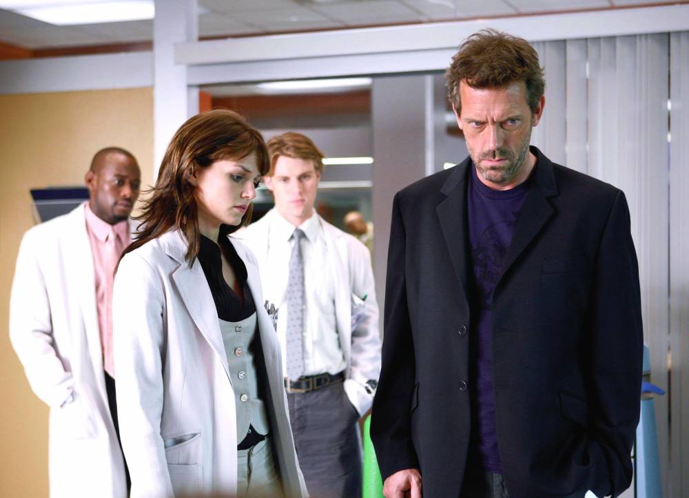

Scientist House (Hugh Laurie) specializes in infectious diseases and nephrology, making excellent diagnoses while maintaining a skeptical, detached and even grumpy attitude towards patients at the fictional Princeton-Plainsboro hospital. He works with a team of doctors selected according to dubious criteria to find solutions to the worst health-related ills.